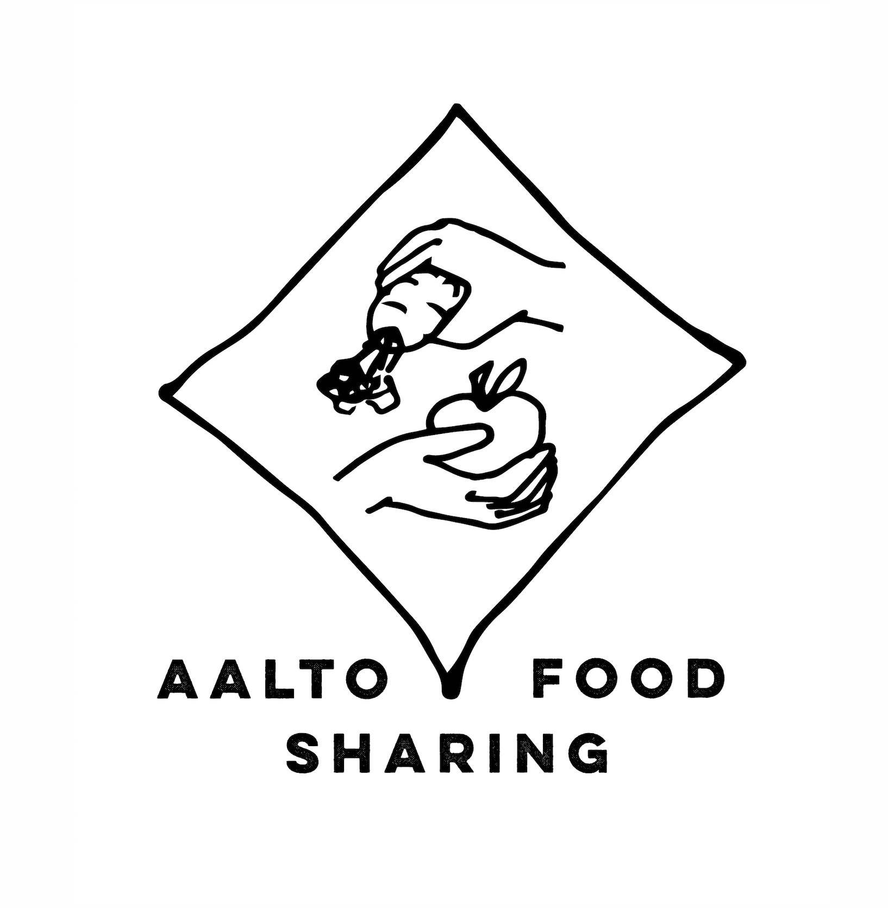

Foodsharing encourages people to share leftover food that would otherwise go to the trash. We save & share food!

Aalto Foodsharing is not a charity. It is a volunteer-run movement where individuals, traders, and producers can offer or collect food that would otherwise be thrown away.
Through our network of sharing points, we rescue and distribute leftover food — giving it a chance to reach people who want it instead of ending up in the trash.
The idea comes from Germany, which has a large network of foodsharing points organized and developed by thousands of volunteers. We brought that model to Tartu.
Our sharing points are open to everyone. Please follow the hygiene rules posted at each location.